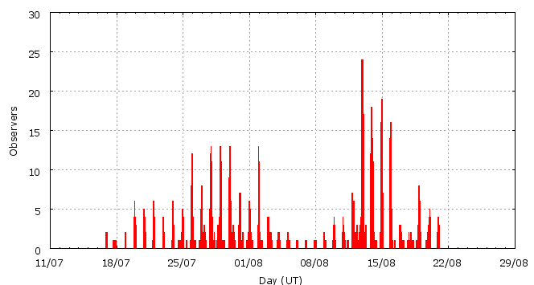

This page shows automated results of the Southern delta-Aquariids 2009, based on visual data entered through the IMO electronic report form. Note that these automated results may not be suitable for scientific use; please refer to manual analysis results published in journal papers (e.g., WGN) when available. Send your feedback regarding this page to Geert Barentsen.
Page generated: 2009 December 3 at 17:45 UT.
ZHRmax = 40 based on 1621 sdaquariids in 1054 data intervals, assuming fixed population index r = 3.0 and zenith correction 1/sin(hR).

| Time (UT) | Solarlon | nINT | nSDA | ZHR | |
|---|---|---|---|---|---|
| 2009-07-17 06:08 | 114.677 | 5 | 4 | 3 | ±1 |
| 2009-07-20 01:05 | 117.340 | 13 | 17 | 6 | ±1 |
| 2009-07-21 14:17 | 118.820 | 24 | 30 | 6 | ±1 |
| 2009-07-23 18:54 | 120.914 | 19 | 34 | 5 | ±1 |
| 2009-07-25 13:58 | 122.629 | 25 | 32 | 6 | ±1 |
| 2009-07-26 00:30 | 123.048 | 20 | 31 | 8 | ±1 |
| 2009-07-26 20:52 | 123.859 | 11 | 32 | 11 | ±2 |
| 2009-07-26 23:32 | 123.966 | 8 | 30 | 10 | ±2 |
| 2009-07-27 00:33 | 124.006 | 8 | 30 | 9 | ±2 |
| 2009-07-27 04:03 | 124.145 | 10 | 31 | 10 | ±2 |
| 2009-07-27 20:07 | 124.786 | 12 | 32 | 10 | ±2 |
| 2009-07-27 23:07 | 124.905 | 9 | 30 | 16 | ±3 |
| 2009-07-27 23:46 | 124.930 | 8 | 30 | 13 | ±2 |
| 2009-07-28 00:38 | 124.965 | 11 | 30 | 11 | ±2 |
| 2009-07-28 01:49 | 125.013 | 7 | 32 | 18 | ±3 |
| 2009-07-28 06:03 | 125.181 | 6 | 34 | 19 | ±3 |
| 2009-07-28 15:54 | 125.573 | 3 | 36 | 40 | ±7 |
| 2009-07-28 17:24 | 125.633 | 4 | 41 | 37 | ±6 |
| 2009-07-28 20:36 | 125.761 | 9 | 36 | 37 | ±6 |
| 2009-07-28 22:26 | 125.834 | 12 | 30 | 19 | ±3 |
| 2009-07-28 23:05 | 125.859 | 11 | 49 | 23 | ±3 |
| 2009-07-28 23:45 | 125.886 | 8 | 60 | 26 | ±3 |
| 2009-07-29 00:09 | 125.902 | 9 | 48 | 24 | ±3 |
| 2009-07-29 00:49 | 125.929 | 6 | 32 | 18 | ±3 |
| 2009-07-29 01:24 | 125.952 | 8 | 32 | 18 | ±3 |
| 2009-07-29 17:47 | 126.604 | 17 | 31 | 15 | ±3 |
| 2009-07-29 22:28 | 126.791 | 8 | 35 | 24 | ±4 |
| 2009-07-29 23:09 | 126.818 | 10 | 43 | 19 | ±3 |
| 2009-07-29 23:49 | 126.844 | 9 | 32 | 15 | ±3 |
| 2009-07-30 00:22 | 126.866 | 7 | 30 | 18 | ±3 |
| 2009-07-30 01:10 | 126.899 | 6 | 32 | 20 | ±3 |
| 2009-07-30 03:08 | 126.977 | 7 | 36 | 15 | ±2 |
| 2009-07-30 07:38 | 127.156 | 4 | 32 | 17 | ±3 |
| 2009-07-30 14:55 | 127.446 | 13 | 33 | 8 | ±1 |
| 2009-07-30 23:49 | 127.801 | 15 | 31 | 14 | ±2 |
| 2009-07-31 01:12 | 127.856 | 13 | 30 | 12 | ±2 |
| 2009-07-31 09:14 | 128.176 | 11 | 31 | 10 | ±2 |
| 2009-08-01 00:32 | 128.786 | 14 | 30 | 10 | ±2 |
| 2009-08-01 02:56 | 128.882 | 9 | 31 | 11 | ±2 |
| 2009-08-01 18:12 | 129.490 | 9 | 34 | 17 | ±3 |
| 2009-08-02 00:36 | 129.745 | 7 | 30 | 16 | ±3 |
| 2009-08-02 04:44 | 129.910 | 7 | 30 | 14 | ±3 |
| 2009-08-03 04:06 | 130.841 | 33 | 30 | 7 | ±1 |
| 2009-08-04 16:26 | 132.290 | 14 | 19 | 6 | ±1 |
| 2009-08-07 01:34 | 134.569 | 2 | 3 | 14 | ±7 |
| 2009-08-09 23:45 | 137.372 | 4 | 7 | 13 | ±5 |
| 2009-08-12 01:50 | 139.374 | 86 | 15 | 3 | ±1 |
| 2009-08-12 22:47 | 140.212 | 117 | 31 | 5 | ±1 |
| 2009-08-13 21:46 | 141.131 | 125 | 30 | 3 | ±1 |
| 2009-08-14 22:24 | 142.117 | 82 | 31 | 2 | ±0 |
| 2009-08-15 12:46 | 142.692 | 49 | 30 | 4 | ±1 |
| 2009-08-15 22:46 | 143.093 | 32 | 30 | 4 | ±1 |
| 2009-08-16 15:00 | 143.743 | 23 | 5 | 1 | ±0 |
| 2009-08-19 05:14 | 146.238 | 40 | 15 | 2 | ±0 |
| 2009-08-20 15:10 | 147.599 | 15 | 1 | 1 | ±1 |
For each estimation interval: time is the middle of the interval, nINT is the number of observing periods and nSDA is the number of sdaquariids involved. ZHR = (1 + sum nSDA) / sum(Teff/C) where Teff is the effective observing time and C is the total correction for limiting magnitude, clouds and zenith correction. The solar longitudes refer to equinox J2000.0.
Data has been received from 88 observers in 28 countries. Thank you for your efforts!

| Observer | Country | Teff | nSDA |
|---|---|---|---|
| Salvador Aguirre | Mexico | 8.00h | 19 |
| Pierre Bader | Germany | 28.10h | 48 |
| Manca Behric | Slovenia | 11.17h | 52 |
| Vasko Cacanoski | Macedonia | 2.17h | 2 |
| Simiao Cheng | China | 4.38h | 5 |
| Marcin Chwala | Poland | 27.43h | 30 |
| Tom Corstjens | Belgium | 2.00h | 2 |
| Paul Craft | Australia | 6.45h | 83 |
| Tibor Csorgei | Slovakia | 1.00h | 3 |
| Lubos Danac | Slovakia | 0.28h | 0 |
| Arseniy Diachko | Ukraine | 3.68h | 1 |
| Sietse Dijkstra | Netherlands | 0.67h | 1 |
| Sietse Dijkstra | Netherlands | 13.29h | 16 |
| Todor Dimitrov | Bulgaria | 21.00h | 71 |
| Audrius Dubietis | Lithuania | 12.40h | 3 |
| Jaroslaw Dygos | Poland | 12.00h | 6 |
| Vladimir Feldman | Israel | 0.92h | 4 |
| Christoph Gerber | Germany | 2.21h | 0 |
| Wei Ge | China | 1.00h | 4 |
| William Godley | United States | 6.16h | 21 |
| Sylvie Gorkova | Czech Republic | 7.67h | 25 |
| Mitja Govedic | Slovenia | 27.93h | 121 |
| Daniel Gruen | Germany | 1.68h | 1 |
| Pavol Habuda | Slovakia | 2.58h | 2 |
| Cathy Hall | Canada | 3.24h | 0 |
| Barbara Handzlik | Poland | 12.78h | 4 |
| Roberto Haver | Italy | 3.34h | 15 |
| Roberto Haver | Italy | 0.86h | 3 |
| Vilem Heblik | Czech Republic | 34.94h | 57 |
| Veerle Herrygers | Belgium | 1.17h | 0 |
| Ken Hodonsky | United States | 6.57h | 22 |
| Kamil Hornoch | Czech Republic | 2.51h | 0 |
| Michal Jakubec | Czech Republic | 4.70h | 1 |
| Carl Johannink | Netherlands | 28.09h | 40 |
| Javor Kac | Slovenia | 30.98h | 151 |
| Amirali Kandymov | Ukraine | 3.35h | 1 |
| Roman Kostenko | Ukraine | 2.93h | 3 |
| Jakub Koukal | Czech Republic | 94.42h | 195 |
| Dovile Krauleidiene | Lithuania | 1.30h | 0 |
| Maciej Kwinta | Poland | 16.75h | 14 |
| Martin Lehotsky | Slovakia | 0.73h | 4 |
| Peter Van Leuteren | Netherlands | 19.79h | 26 |
| Anna S. Levina | Israel | 0.92h | 10 |
| Tomasz Lojek | Poland | 19.25h | 26 |
| Jer Nan Lou | Taiwan | 2.88h | 14 |
| Robert Lunsford | United States | 4.00h | 29 |
| Maciej Macidym | Poland | 1.90h | 0 |
| Jose Luis Maestre Garcia | Spain | 5.49h | 4 |
| Milos Malat | Slovakia | 0.73h | 2 |
| Pierre Martin | Canada | 17.02h | 80 |
| Mikhail Maslov | Russia | 16.12h | 13 |
| Batlomiej Matuszkiewicz | Poland | 8.38h | 3 |
| Bruce Mccurdy | Canada | 4.00h | 11 |
| Jakub Mirocha | Poland | 7.76h | 3 |
| Koen Miskotte | Netherlands | 14.39h | 15 |
| Sabine Wachter | Germany | 8.59h | 16 |
| Filip Novoselnik | Croatia | 3.67h | 2 |
| Tereza Novotna | Czech Republic | 4.50h | 4 |
| Antonia Penkova-jordanova | Bulgaria | 6.41h | 47 |
| Alan Pevec | Croatia | 1.15h | 2 |
| Krzysztof Pieszczoch | Poland | 2.80h | 4 |
| Ivica Pletikosa | Croatia | 3.00h | 1 |
| Krzysztof Polakowski | Poland | 9.48h | 4 |
| Robert Pomohaci | Romania | 0.78h | 3 |
| Jurgen Rendtel | Germany | 24.59h | 88 |
| Lukasz Sanocki | Poland | 1.94h | 1 |
| Magdalena Sieniawska | Poland | 23.4h | 28 |
| Andrzej Skoczewski | Poland | 7.17h | 3 |
| Stanislav Sokol | Slovakia | 0.73h | 4 |
| Paulina Sowicka | Poland | 10.72h | 5 |
| Wesley Stone | United States | 4.69h | 1 |
| Matej Sustr | Slovakia | 0.73h | 9 |
| Michal Sustr | Slovakia | 0.73h | 6 |
| Jiri Svoboda | Czech Republic | 1.93h | 0 |
| Michel Vandeputte | Belgium | 43.66h | 132 |
| Daniela Urumova | Bulgaria | 8.16h | 43 |
| Hendrik Vandenbruaene | Belgium | 1.17h | 0 |
| Jan Verfl | Czech Republic | 2.06h | 0 |
| Denis Vida | Croatia | 6.15h | 6 |
| Myriam Vingerhoets | Belgium | 15.79h | 34 |
| Frank Wachter | Germany | 2.05h | 3 |
| Ewa Wala | Poland | 12.83h | 10 |
| William Watson | United States | 16.40h | 6 |
| Thomas Weiland | Austria | 35.93h | 69 |
| Mariusz Wisniewski | Poland | 20.34h | 30 |
| Lukasz Wozniak | Poland | 4.33h | 5 |
| Yingkai Xia | China | 1.00h | 5 |
| Ilkka Yrjola | Finland | 1.00h | 1 |
| Yu Zhang | China | 2.00h | 3 |
| Jurga Zieniute | Lithuania | 2.50h | 1 |
| Przemyslaw Zoladek | Poland | 4.00h | 6 |
Create your own analysis!
Rate intervals: sda2009_rate.csv (CSV-format).
Magnitude distributions: sda2009_magn.csv (CSV-format).